帰還系 をドロップするmob一覧
一覧ページへ
| 斧骸骨戦士 | アンデット | 一般1 | |||||||
|---|---|---|---|---|---|---|---|---|---|
 | 両手剣(410) | 鈍器(270) | 矢(410) | 足(230) | 槍投擲機(210) | 帰還(160) | 鎌(410) | 魔弾(410) | |
| 攻撃骸骨戦士 | アンデット | 一般2 | |||||||
 | 両手剣(380) | ステッキ(250) | 盾(380) | 足(210) | 槍投擲機(190) | 帰還(150) | 鎌(380) | ||
| 骸骨狂戦士 | アンデット | 一般3 | |||||||
| 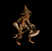 | 両手剣(360) | 鈍器(240) | 矢(360) | 足(200) | 槍投擲機(180) | 帰還(140) | 鎌(360) | 魔弾(240) | |
| 死の斧 | アンデット | セミ1 | |||||||
| 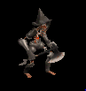 | 両手剣(390) | ステッキ(260) | 盾(390) | 足(220) | 槍投擲機(200) | 帰還(160) | 鎌(390) | ||
| 地獄の斧 | アンデット | ボス1 | |||||||
 | 両手剣(470) | 鈍器(310) | 盾(470) | 足(260) | 槍投擲機(240) | 帰還(190) | 鎌(470) | ||
| 両刀骸骨戦士 | アンデット | 一般1 | |||||||
 | 片手剣(410) | 弓(270) | 矢(410) | 兜・帽子(230) | 槍投擲機(210) | 帰還(160) | クロー(410) | 銃(270) | 魔弾(410) |
| 防御骸骨戦士 | アンデット | 一般2 | |||||||
 | 片手剣(380) | 槍(250) | 弾(380) | 兜・帽子(210) | 槍投擲機(190) | 帰還(150) | クロー(380) | 箒(250) | |
| 骸骨剣士 | アンデット | 一般3 | |||||||
 | 片手剣(360) | 弓(240) | 矢(360) | 兜・帽子(200) | 槍投擲機(180) | 帰還(140) | クロー(360) | 銃(240) | 魔弾(360) |
| 死の双剣士 | アンデット | セミ1 | |||||||
 | 片手剣(390) | 槍(260) | 鍵(30) | 兜・帽子(220) | 槍投擲機(200) | 帰還(160) | クロー(390) | 箒(260) | |
| 地獄の双剣 | アンデット | ボス1 | |||||||
 | 片手剣(470) | 弓(310) | 鍵(50) | 兜・帽子(260) | 槍投擲機(240) | 帰還(190) | クロー(470) | 銃(310) | |
| リビングデッド | アンデット | 一般1 | |||||||
 | 投擲(410) | 牙(270) | イベント(410) | 腰(230) | 爪(210) | 帰還(160) | 双剣(270) | ||
| グール | アンデット | 一般2 | |||||||
 | 投擲(380) | スリング(250) | イベント(380) | 足(210) | 爪(190) | 帰還(150) | |||
| ゾンビ | アンデット | 一般3 | |||||||
 | 投擲(360) | 牙(240) | イベント(360) | 兜・帽子(200) | 爪(180) | 帰還(140) | 双剣(240) | ||
| スプーク | アンデット | セミ1 | |||||||
| 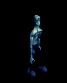 | 投擲(390) | スリング(260) | 状態異常回復1(390) | 腰(220) | 爪(200) | 帰還(160) | |||
| デスピンサー | アンデット | ボス1 | |||||||
 | 投擲(470) | 牙(310) | 状態異常回復1(470) | 鎧(260) | 爪(240) | 帰還(190) | 双剣(310) | ||
| オーク | 人間 | 一般3 | |||||||
 | 鈍器(360) | 牙(240) | 弾(360) | 足(200) | 冠(180) | 帰還(140) | 双剣(240) | ||
| キクロップス | 人間 | セミ1 | |||||||
 | スリング(390) | 杖(260) | 弾(390) | 足(220) | 爪(200) | 帰還(160) | 本(260) | ||
| チタン | 人間 | ボス1 | |||||||
 | スリング(470) | 杖(310) | 弾(470) | 足(260) | 冠(240) | 帰還(190) | 本(310) | ||
| アイウィング | 悪魔 | 一般3 | |||||||
 | 笛(360) | 翼(240) | 状態異常回復1(360) | 兜・帽子(200) | 冠(180) | 帰還(140) | 水晶(240) | ||
| ドゥームスフィア | 悪魔 | 一般4 | |||||||
 | 笛(300) | 翼(200) | 状態異常回復1(300) | 兜・帽子(170) | 首(150) | 帰還(120) | 水晶(200) | ||
| ビホルダー | 悪魔 | セミ2 | |||||||
 | 投擲(420) | 翼(280) | 状態異常回復1(420) | 兜・帽子(230) | 冠(210) | 帰還(170) | 水晶(280) | ||
| アルゴス | 悪魔 | セミ3 | |||||||
 | 笛(450) | 翼(300) | 鍵(450) | 兜・帽子(250) | 首(230) | 帰還(180) | 水晶(300) | ||
| オーバーシアー | 悪魔 | ボス2 | |||||||
 | 投擲(490) | 翼(330) | cP回復(490) | 兜・帽子(270) | 冠(250) | 帰還(200) | 水晶(330) | ||
| ラットマン | 悪魔 | 一般1 | |||||||
 | 投擲(410) | 笛(270) | 弾(410) | 足(230) | 指輪(210) | 帰還(160) | |||
| ワーラット | 悪魔 | 一般2 | |||||||
 | 投擲(380) | ステッキ(250) | 矢(380) | 足(210) | 槍投擲機(190) | 帰還(150) | 魔弾(380) | ||
| ラティアン | 悪魔 | 一般3 | |||||||
 | 投擲(360) | 笛(240) | 弾(360) | 足(200) | 手首(180) | 帰還(140) | |||
| スパイダー | 動物 | 一般1 | |||||||
 | 片手剣(410) | 投擲(270) | 矢(410) | グローブ(230) | 首(210) | 帰還(160) | クロー(410) | 魔弾(410) | |
| フェイズスパイダ | 動物 | 一般2 | |||||||
 | 片手剣(380) | 投擲(250) | 矢(380) | グローブ(210) | 首(190) | 帰還(150) | クロー(380) | 魔弾(380) | |
| ウィーブウィドウ | 動物 | セミ1 | |||||||
 | 片手剣(390) | 槍(260) | 矢(390) | グローブ(220) | 首(200) | 帰還(160) | クロー(390) | 箒(260) | 魔弾(390) |
| 飛海月 | 動物 | 一般1 | |||||||
 | 鞭(410) | スリング(270) | 弾(410) | 腰(230) | 手首(210) | 帰還(160) | |||
| アクアスライム | 動物 | 一般3 | |||||||
| 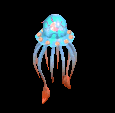 | 鞭(360) | スリング(240) | 弾(360) | 腰(200) | 手首(180) | 帰還(140) | |||
| クラーケン | 動物 | ボス1 | |||||||
 | 鞭(470) | スリング(310) | 弾(470) | 腰(260) | 手首(240) | 帰還(190) | |||
| 蟲 | 動物 | 一般1 | |||||||
 | 鈍器(410) | スリング(270) | イベント(410) | マント(230) | 冠(210) | 帰還(160) | |||
| リーチ | 動物 | 一般2 | |||||||
 | 鈍器(380) | 片手剣(250) | イベント(380) | マント(210) | 冠(190) | 帰還(150) | クロー(250) | ||
| マゴット | 動物 | 一般3 | |||||||
 | 鈍器(360) | スリング(240) | イベント(360) | マント(200) | 冠(180) | 帰還(140) | |||
| クローラー | 動物 | 一般4 | |||||||
| 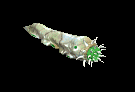 | 鈍器(300) | 片手剣(200) | イベント(300) | マント(170) | 冠(150) | 帰還(120) | クロー(200) | ||
| クリーパー | 動物 | セミ1 | |||||||
 | 鈍器(390) | スリング(260) | イベント(390) | マント(220) | 冠(200) | 帰還(160) | |||
| クラブシェル | 動物 | 一般1 | |||||||
| 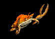 | 投擲(410) | 両手剣(270) | 盾(410) | 足(230) | 爪(210) | 帰還(160) | 鎌(270) | ||
| キングクラブ | 動物 | セミ1 | |||||||
 | 投擲(390) | 両手剣(260) | 状態異常回復1(390) | 足(220) | 指輪(200) | 帰還(160) | 鎌(260) | ||
| 蟲の群れ | 動物 | 一般1 | |||||||
 | 笛(410) | 翼(270) | イベント(410) | グローブ(230) | イヤリング(210) | 帰還(160) | 水晶(270) | ||
| 鋏昆虫の群れ | 動物 | 一般2 | |||||||
 | 笛(380) | 翼(250) | イベント(380) | 腰(210) | 首(190) | 帰還(150) | 水晶(250) | ||
| 殺人蚊の群れ | 動物 | 一般3 | |||||||
 | 笛(360) | 翼(240) | イベント(360) | 足(200) | イヤリング(180) | 帰還(140) | 水晶(240) | ||
| イナゴの群れ | 動物 | セミ1 | |||||||
 | 笛(390) | 翼(260) | イベント(390) | 兜・帽子(220) | 首(200) | 帰還(160) | 水晶(260) | ||
| ディザースター | 動物 | ボス1 | |||||||
 | 笛(470) | 翼(310) | イベント(470) | マント(260) | イヤリング(240) | 帰還(190) | 水晶(310) | ||
| 斧骸骨戦士Ex | アンデット | 一般1 | |||||||
| 両手剣(410) | 鈍器(270) | 矢(410) | 足(230) | 槍投擲機(210) | 帰還(160) | 鎌(410) | 魔弾(410) | |
| 攻撃骸骨戦士Ex | アンデット | 一般2 | |||||||
| 両手剣(380) | ステッキ(250) | 盾(380) | 足(210) | 槍投擲機(190) | 帰還(150) | 鎌(380) | ||
| 骸骨狂戦士Ex | アンデット | 一般3 | |||||||
| 両手剣(360) | 鈍器(240) | 矢(360) | 足(200) | 槍投擲機(180) | 帰還(140) | 鎌(360) | 魔弾(360) | ||
| 死の斧Ex | アンデット | セミ1 | |||||||
| 両手剣(450) | ステッキ(300) | 盾(450) | 足(250) | 槍投擲機(230) | 帰還(180) | 鎌(450) | |||
| 地獄の斧Ex | アンデット | ボス1 | |||||||
| 両手剣(1200) | 鈍器(800) | 盾(1200) | 足(670) | 槍投擲機(600) | 帰還(480) | 鎌(1200) | ||
| 両刀骸骨戦士Ex | アンデット | 一般1 | |||||||
| 片手剣(410) | 弓(270) | 矢(410) | 兜・帽子(230) | 槍投擲機(210) | 帰還(160) | クロー(410) | 銃(270) | 魔弾(410) |
| 防御骸骨戦士Ex | アンデット | 一般2 | |||||||
| 片手剣(380) | 槍(250) | 弾(380) | 兜・帽子(210) | 槍投擲機(190) | 帰還(150) | クロー(380) | 箒(250) | |
| 骸骨剣士Ex | アンデット | 一般3 | |||||||
| 片手剣(360) | 弓(240) | 矢(360) | 兜・帽子(200) | 槍投擲機(180) | 帰還(140) | クロー(360) | 銃(240) | 魔弾(360) |
| 死の双剣士Ex | アンデット | セミ1 | |||||||
| 片手剣(450) | 槍(300) | 鍵(30) | 兜・帽子(250) | 槍投擲機(230) | 帰還(180) | クロー(450) | 箒(300) | |
| 地獄の双剣Ex | アンデット | ボス1 | |||||||
| 片手剣(1200) | 弓(800) | 鍵(50) | 兜・帽子(670) | 槍投擲機(600) | 帰還(480) | クロー(1200) | 銃(800) | |
| リビングデッドEx | アンデット | 一般1 | |||||||
| 投擲(410) | 牙(270) | イベント(410) | 腰(230) | 爪(210) | 帰還(160) | 双剣(270) | ||
| グールEx | アンデット | 一般2 | |||||||
| 投擲(380) | スリング(250) | イベント(380) | 足(210) | 爪(190) | 帰還(150) | |||
| ゾンビEx | アンデット | 一般3 | |||||||
| 投擲(360) | 牙(240) | イベント(360) | 兜・帽子(200) | 爪(180) | 帰還(140) | 双剣(240) | ||
| スプークEx | アンデット | セミ1 | |||||||
| 投擲(450) | スリング(300) | 状態異常回復1(450) | 腰(250) | 爪(230) | 帰還(180) | ||||
| デスピンサーEx | アンデット | ボス1 | |||||||
| 投擲(1200) | 牙(800) | 状態異常回復1(1200) | 鎧(670) | 爪(600) | 帰還(480) | 双剣(800) | ||
| オークEx | 人間 | 一般3 | |||||||
| 鈍器(360) | 牙(240) | 弾(360) | 足(200) | 冠(180) | 帰還(140) | 双剣(240) | ||
| キクロップスEx | 人間 | セミ1 | |||||||
| スリング(450) | 杖(300) | 弾(450) | 足(250) | 爪(230) | 帰還(180) | 本(300) | ||
| チタンEx | 人間 | ボス1 | |||||||
| スリング(1200) | 杖(800) | 弾(1200) | 足(670) | 冠(600) | 帰還(480) | 本(800) | ||
| アイウィングEx | 悪魔 | 一般3 | |||||||
| 笛(360) | 翼(240) | 状態異常回復1(360) | 兜・帽子(200) | 冠(180) | 帰還(140) | 水晶(240) | ||
| ドゥームスフィアEx | 悪魔 | 一般4 | |||||||
| 笛(300) | 翼(200) | 状態異常回復1(300) | 兜・帽子(170) | 首(150) | 帰還(120) | 水晶(200) | ||
| ビホルダーEx | 悪魔 | セミ2 | |||||||
| 投擲(650) | 翼(430) | 状態異常回復1(650) | 兜・帽子(360) | 冠(330) | 帰還(260) | 水晶(430) | ||
| アルゴスEx | 悪魔 | セミ3 | |||||||
| 笛(800) | 翼(530) | 鍵(50) | 兜・帽子(440) | 首(400) | 帰還(320) | 水晶(530) | ||
| オーバーシアーEx | 悪魔 | ボス2 | |||||||
| 投擲(2000) | 翼(1330) | cP回復(2000) | 兜・帽子(1110) | 冠(1000) | 帰還(800) | 水晶(1330) | ||
| ラットマンEx | 悪魔 | 一般1 | |||||||
| 投擲(410) | 笛(270) | 弾(410) | 足(230) | 指輪(210) | 帰還(160) | |||
| ワーラットEx | 悪魔 | 一般2 | |||||||
| 投擲(380) | ステッキ(250) | 矢(380) | 足(210) | 槍投擲機(190) | 帰還(150) | 魔弾(380) | ||
| ラティアンEx | 悪魔 | 一般3 | |||||||
| 投擲(360) | 笛(240) | 弾(360) | 足(200) | 手首(180) | 帰還(140) | |||
| スパイダーEx | 動物 | 一般1 | |||||||
| 片手剣(410) | 投擲(270) | 矢(410) | グローブ(230) | 首(210) | 帰還(160) | クロー(410) | 魔弾(410) | |
| フェイズスパイダEx | 動物 | 一般2 | |||||||
| 片手剣(380) | 投擲(250) | 矢(380) | グローブ(210) | 首(190) | 帰還(150) | クロー(380) | 魔弾(380) | |
| ウィーブウィドウEx | 動物 | セミ1 | |||||||
| 片手剣(450) | 槍(300) | 矢(450) | グローブ(250) | 首(230) | 帰還(180) | クロー(450) | 箒(300) | 魔弾(450) |
| 飛海月Ex | 動物 | 一般1 | |||||||
| 鞭(410) | スリング(270) | 弾(410) | 腰(230) | 手首(210) | 帰還(160) | |||
| アクアスライムEx | 動物 | 一般3 | |||||||
| 鞭(360) | スリング(240) | 弾(360) | 腰(200) | 手首(180) | 帰還(140) | ||||
| クラーケンEx | 動物 | ボス1 | |||||||
| 鞭(1200) | スリング(800) | 弾(1200) | 腰(670) | 手首(600) | 帰還(480) | |||
| ワームEx | 動物 | 一般1 | |||||||
| 鈍器(410) | スリング(270) | イベント(410) | マント(230) | 冠(210) | 帰還(160) | |||
| リーチEx | 動物 | 一般2 | |||||||
| 鈍器(380) | 片手剣(250) | イベント(380) | マント(210) | 冠(190) | 帰還(150) | クロー(250) | ||
| マゴットEx | 動物 | 一般3 | |||||||
| 鈍器(360) | スリング(240) | イベント(360) | マント(200) | 冠(180) | 帰還(140) | |||
| クローラーEx | 動物 | 一般4 | |||||||
| 鈍器(300) | 片手剣(200) | イベント(300) | マント(170) | 冠(150) | 帰還(120) | クロー(200) | |||
| クリーパーEx | 動物 | セミ1 | |||||||
| 鈍器(450) | スリング(300) | イベント(450) | マント(250) | 冠(230) | 帰還(180) | |||
| クラブシェルEx | 動物 | 一般1 | |||||||
| 投擲(410) | 両手剣(270) | 盾(410) | 足(230) | 爪(210) | 帰還(160) | 鎌(270) | |||
| キングクラブEx | 動物 | セミ1 | |||||||
| 投擲(450) | 両手剣(300) | 状態異常回復1(450) | 足(250) | 指輪(230) | 帰還(180) | 鎌(300) | ||
| 蟲の群れEx | 動物 | 一般1 | |||||||
| 笛(410) | 翼(270) | イベント(410) | グローブ(230) | イヤリング(210) | 帰還(160) | 水晶(270) | ||
| 鋏昆虫の群れEx | 動物 | 一般2 | |||||||
| 笛(380) | 翼(250) | イベント(380) | 腰(210) | 首(190) | 帰還(150) | 水晶(250) | ||
| 殺人蚊の群れEx | 動物 | 一般3 | |||||||
| 笛(360) | 翼(240) | イベント(360) | 足(200) | イヤリング(180) | 帰還(140) | 水晶(240) | ||
| イナゴの群れEx | 動物 | セミ1 | |||||||
| 笛(450) | 翼(300) | イベント(450) | 兜・帽子(250) | 首(230) | 帰還(180) | 水晶(300) | ||
| ディザースターEx | 動物 | ボス1 | |||||||
| 笛(1200) | 翼(800) | イベント(1200) | マント(670) | イヤリング(600) | 帰還(480) | 水晶(800) | ||
| ペールライトEx | 神獣 | ボス3 | |||||||
| 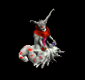 | 笛(2800) | ステッキ(1870) | 盾(2800) | 腰(1560) | 手首(1400) | 帰還(1120) | |||
| 斧骸骨戦士Zin | アンデット | 一般1 | |||||||
| 両手剣(1210) | 鈍器(810) | 矢(1210) | 足(670) | 槍投擲機(610) | 帰還(480) | 鎌(1210) | 魔弾(1210) | |
| 攻撃骸骨戦士Zin | アンデット | 一般2 | |||||||
| 両手剣(1380) | ステッキ(920) | 盾(1380) | 足(770) | 槍投擲機(690) | 帰還(550) | 鎌(1380) | ||
| 骸骨狂戦士Zin | アンデット | 一般3 | |||||||
| 両手剣(1560) | 鈍器(1040) | 矢(1560) | 足(870) | 槍投擲機(780) | 帰還(620) | 鎌(1560) | 魔弾(1560) | ||
| 死の斧Zin | アンデット | セミ1 | |||||||
| 両手剣(650) | ステッキ(430) | 盾(650) | 足(360) | 槍投擲機(330) | 帰還(260) | 鎌(650) | |||
| 地獄の斧Zin | アンデット | ボス1 | |||||||
| 両手剣(1000) | 鈍器(670) | 盾(1000) | 足(560) | 槍投擲機(500) | 帰還(400) | 鎌(1000) | ||
| 両刀骸骨戦士Zin | アンデット | 一般1 | |||||||
| 片手剣(1210) | 弓(810) | 矢(1210) | 兜・帽子(670) | 槍投擲機(610) | 帰還(480) | クロー(1210) | 銃(810) | 魔弾(1210) |
| 防御骸骨戦士Zin | アンデット | 一般2 | |||||||
| 片手剣(1380) | 槍(920) | 弾(1380) | 兜・帽子(770) | 槍投擲機(690) | 帰還(550) | クロー(1380) | 箒(920) | |
| 骸骨剣士Zin | アンデット | 一般3 | |||||||
| 片手剣(1560) | 弓(1040) | 矢(1560) | 兜・帽子(870) | 槍投擲機(780) | 帰還(620) | クロー(1560) | 銃(1040) | 魔弾(1560) |
| 死の双剣士Zin | アンデット | セミ1 | |||||||
| 片手剣(650) | 槍(430) | 鍵(10) | 兜・帽子(360) | 槍投擲機(330) | 帰還(260) | クロー(650) | 箒(430) | |
| 地獄の双剣Zin | アンデット | ボス1 | |||||||
| 片手剣(1000) | 弓(670) | 鍵(40) | 兜・帽子(560) | 槍投擲機(500) | 帰還(400) | クロー(1000) | 銃(670) | |
| リビングデッドZin | アンデット | 一般1 | |||||||
| 投擲(1210) | 牙(810) | イベント(1210) | 腰(670) | 爪(610) | 帰還(480) | 双剣(810) | ||
| グールZin | アンデット | 一般2 | |||||||
| 投擲(1380) | スリング(920) | イベント(1380) | 足(770) | 爪(690) | 帰還(550) | |||
| ゾンビZin | アンデット | 一般3 | |||||||
| 投擲(1560) | 牙(1040) | イベント(1560) | 兜・帽子(870) | 爪(780) | 帰還(620) | 双剣(1040) | ||
| スプクZin | アンデット | セミ1 | |||||||
| 投擲(650) | スリング(430) | 状態異常回復1(650) | 腰(360) | 爪(330) | 帰還(260) | ||||
| デスピンサーZin | アンデット | ボス1 | |||||||
| 投擲(1000) | 牙(670) | 状態異常回復1(1000) | 鎧(560) | 爪(500) | 帰還(400) | 双剣(670) | ||
| オークZin | 人間 | 一般3 | |||||||
| 鈍器(1560) | 牙(1040) | 弾(1560) | 足(870) | 冠(780) | 帰還(620) | 双剣(1040) | ||
| キクロップスZin | 人間 | セミ1 | |||||||
| スリング(650) | 杖(430) | 弾(650) | 足(360) | 爪(330) | 帰還(260) | 本(430) | ||
| チタンZin | 人間 | ボス1 | |||||||
| スリング(1000) | 杖(670) | 弾(1000) | 足(560) | 冠(500) | 帰還(400) | 本(670) | ||
| アイウィングZin | 悪魔 | 一般3 | |||||||
| 笛(1560) | 翼(1040) | 状態異常回復1(1560) | 兜・帽子(870) | 冠(780) | 帰還(620) | 水晶(1040) | ||
| ドゥームスフィアZin | 悪魔 | 一般4 | |||||||
| 笛(1200) | 翼(800) | 状態異常回復1(1200) | 兜・帽子(670) | 首(600) | 帰還(480) | 水晶(800) | ||
| ビホルダーZin | 悪魔 | セミ2 | |||||||
| 投擲(750) | 翼(500) | 状態異常回復1(750) | 兜・帽子(420) | 冠(380) | 帰還(300) | 水晶(500) | ||
| アルゴスZin | 悪魔 | セミ3 | |||||||
| 笛(900) | 翼(600) | 鍵(40) | 兜・帽子(500) | 首(450) | 帰還(360) | 水晶(600) | ||
| オーバーシアーZin | 悪魔 | ボス2 | |||||||
| 投擲(1100) | 翼(730) | cP回復(1100) | 兜・帽子(610) | 冠(550) | 帰還(440) | 水晶(730) | ||
| ラットマンZin | 悪魔 | 一般1 | |||||||
| 投擲(1210) | 笛(810) | 弾(1210) | 足(670) | 指輪(610) | 帰還(480) | |||
| ワーラットZin | 悪魔 | 一般2 | |||||||
| 投擲(1380) | ステッキ(920) | 矢(1380) | 足(770) | 槍投擲機(690) | 帰還(550) | 魔弾(1380) | ||
| ラティアンZin | 悪魔 | 一般3 | |||||||
| 投擲(1560) | 笛(1040) | 弾(1560) | 足(870) | 手首(780) | 帰還(620) | |||
| スパイダーZin | 動物 | 一般1 | |||||||
| 片手剣(1210) | 投擲(810) | 矢(1210) | グローブ(670) | 首(610) | 帰還(480) | クロー(1210) | 魔弾(1210) | |
| フェイズスパイダZin | 動物 | 一般2 | |||||||
| 片手剣(1380) | 投擲(920) | 矢(1380) | グローブ(770) | 首(690) | 帰還(550) | クロー(1380) | 魔弾(1380) | |
| ウィーブウィドウZin | 動物 | セミ1 | |||||||
| 片手剣(650) | 槍(430) | 矢(650) | グローブ(360) | 首(330) | 帰還(260) | クロー(650) | 箒(430) | 魔弾(650) |
| 飛海月Zin | 動物 | 一般1 | |||||||
| 鞭(1210) | スリング(810) | 弾(1210) | 腰(670) | 手首(610) | 帰還(480) | |||
| アクアスライムZin | 動物 | 一般3 | |||||||
| 鞭(1560) | スリング(1040) | 弾(1560) | 腰(870) | 手首(780) | 帰還(620) | ||||
| クラーケンZin | 動物 | ボス1 | |||||||
| 鞭(1000) | スリング(670) | 弾(1000) | 腰(560) | 手首(500) | 帰還(400) | |||
| 蟲Zin | 動物 | 一般1 | |||||||
| 鈍器(1210) | スリング(810) | イベント(1210) | マント(670) | 冠(610) | 帰還(480) | |||
| リーチZin | 動物 | 一般2 | |||||||
| 鈍器(1380) | 片手剣(920) | イベント(1380) | マント(770) | 冠(690) | 帰還(550) | クロー(920) | ||
| マゴットZin | 動物 | 一般3 | |||||||
| 鈍器(1560) | スリング(1040) | イベント(1560) | マント(870) | 冠(780) | 帰還(620) | |||
| クローラーZin | 動物 | 一般4 | |||||||
| 鈍器(1200) | 片手剣(800) | イベント(1200) | マント(670) | 冠(600) | 帰還(480) | クロー(800) | |||
| クリーパーZin | 動物 | セミ1 | |||||||
| 鈍器(650) | スリング(430) | イベント(650) | マント(360) | 冠(330) | 帰還(260) | |||
| クラブシェルZin | 動物 | 一般1 | |||||||
| 投擲(1210) | 両手剣(810) | 盾(1210) | 足(670) | 爪(610) | 帰還(480) | 鎌(810) | |||
| キングクラブZin | 動物 | セミ1 | |||||||
| 投擲(650) | 両手剣(430) | 状態異常回復1(650) | 足(360) | 指輪(330) | 帰還(260) | 鎌(430) | ||
| 蟲の群れZin | 動物 | 一般1 | |||||||
| 笛(1210) | 翼(810) | イベント(1210) | グローブ(670) | イヤリング(610) | 帰還(480) | 水晶(810) | ||
| 鋏昆虫の群れZin | 動物 | 一般2 | |||||||
| 笛(1380) | 翼(920) | イベント(1380) | 腰(770) | 首(690) | 帰還(550) | 水晶(920) | ||
| 殺人蚊の群れZin | 動物 | 一般3 | |||||||
| 笛(1560) | 翼(1040) | イベント(1560) | 足(870) | イヤリング(780) | 帰還(620) | 水晶(1040) | ||
| イナゴの群れZin | 動物 | セミ1 | |||||||
| 笛(650) | 翼(430) | イベント(650) | 兜・帽子(360) | 首(330) | 帰還(260) | 水晶(430) | ||
| ディザースターZin | 動物 | ボス1 | |||||||
| 笛(1000) | 翼(670) | イベント(1000) | マント(560) | イヤリング(500) | 帰還(400) | 水晶(670) | ||
| ペールライトZin | 神獣 | ボス3 | |||||||
| 笛(1200) | ステッキ(800) | 盾(1200) | 腰(670) | 手首(600) | 帰還(480) | ||||
| バイキングヘッド2 Zin | アンデット | ボス1 | |||||||
 | 冠(150) | 鈍器(250) | 帰還(450) | 職業鎧(650) | 肩刺青(850) | HP回復(1000) | |||
| アンデッド魔法師 Zin | アンデット | 一般3 | |||||||
 | 宝石(40) | マント(70) | 帰還(120) | マント(170) | 矢(220) | HP回復(260) | 魔弾(220) | ||
| アンデッドライト1 Zin | アンデット | セミ1 | |||||||
 | 鍵(50) | 状態異常回復2(90) | 帰還(160) | cP回復(230) | 矢(300) | イベント(350) | 魔弾(300) | ||
| アンデッドロック1 Zin | アンデット | セミ1 | |||||||
 | 指輪(50) | マント(90) | 帰還(160) | 手首(230) | 矢(300) | グローブ(350) | 魔弾(300) | ||
| ボーンキメラ1 Zin | アンデット | セミ1 | |||||||
 | 能力向上2(50) | 状態異常回復2(90) | 帰還(160) | 能力向上2(230) | 槍投擲機(300) | イベント(350) | |||
| 装甲ボーンキメラ1 Zin | アンデット | セミ1 | |||||||
 | 片手剣(50) | 首(90) | 帰還(160) | 職業鎧(230) | 肩刺青(300) | イベント(350) | クロー(50) | ||
| ハイエルフ1 Zin | 人間 | セミ1 | |||||||
 | 片手剣(90) | イヤリング(260) | 帰還(180) | 槍(140) | 槍投擲機(40) | イベント(50) | クロー(90) | 箒(140) | |
| エルフガーディア1 Zin | 人間 | セミ3 | |||||||
 | 片手剣(180) | ブローチ(530) | 帰還(350) | 槍(280) | 状態異常回復1(70) | 兜・帽子(110) | クロー(180) | 箒(280) | |
| 襲撃団4 Zin | 人間 | ボス3 | |||||||
 | 宝石(600) | 爪(1800) | 帰還(1200) | 笛(960) | 腕刺青(240) | 盾(360) | |||
| ストリート戦士 Zin | 人間 | セミ2 | |||||||
 | 能力向上2(140) | マント(410) | 帰還(280) | 笛(220) | 弓(60) | 盾(80) | 銃(60) | ||
| シーク守護者 Zin | 人間 | 一般4 | |||||||
 | 鎧(50) | 首(150) | 帰還(100) | マント(80) | 腕刺青(20) | 翼(30) | 水晶(30) | ||
| シーク天使 Zin | 人間 | 一般3 | |||||||
 | 鎧(70) | 首(200) | 帰還(130) | 手首(100) | 腰(30) | 翼(40) | 水晶(40) | ||
| 逃亡ハンター2 Zin | 人間 | セミ3 | |||||||
 | 投擲(180) | 鈍器(530) | 帰還(350) | 槍(280) | ステッキ(70) | グローブ(110) | 箒(280) | ||
| 脱獄犯1 Zin | 人間 | セミ2 | |||||||
 | 鍵(140) | 鈍器(410) | 帰還(280) | cP回復(220) | ステッキ(60) | グローブ(80) | |||
| 狂魔(狂った悪魔…)1 Zin | 悪魔 | セミ1 | |||||||
 | 片手剣(230) | 爪(280) | 帰還(120) | 鞭(70) | 状態異常回復1(40) | 兜・帽子(20) | クロー(230) | ||
| ゴールデンマスク1 Zin | 悪魔 | セミ2 | |||||||
 | 能力向上2(360) | 爪(440) | 帰還(180) | 鞭(110) | 肩刺青(60) | 杖(30) | 本(30) | ||
| 剣闘士2 Zin | 悪魔 | セミ3 | |||||||
| 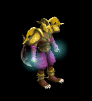 | 片手剣(460) | 爪(560) | 帰還(230) | 鞭(140) | 矢(70) | HP回復(40) | クロー(460) | 魔弾(70) | |
| 古代悪魔2 Zin | 悪魔 | セミ3 | |||||||
| 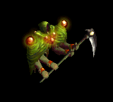 | 指輪(460) | 首(560) | 帰還(230) | 手首(140) | 肩刺青(70) | cP回復(40) | |||
| 死神4 Zin | 悪魔 | ボス3 | |||||||
 | 指輪(1560) | 首(1920) | 帰還(790) | 手首(480) | 弓(240) | HP回復(120) | 銃(240) | ||
| 邪臣3 Zin | 悪魔 | ボス2 | |||||||
| 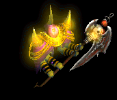 | 指輪(1170) | 職業鎧(1440) | 帰還(590) | 手首(360) | 杖(180) | イベント(90) | 本(180) | ||
| 魔女4 Zin | 悪魔 | ボス3 | |||||||
 | 鎧(1560) | イヤリング(1920) | 帰還(790) | 笛(480) | 状態異常回復1(240) | HP回復(120) | |||
| サキュバス4 Zin | 悪魔 | ボス3 | |||||||
 | 能力向上2(1560) | イヤリング(1920) | 帰還(790) | マント(480) | 肩刺青(240) | 盾(120) | |||
| パンタズドリーム1 Zin | 悪魔 | セミ2 | |||||||
 | 鍵(360) | イヤリング(440) | 帰還(180) | 笛(110) | ステッキ(60) | 盾(30) | |||
| ペンティライダー3 Zin | 悪魔 | ボス1 | |||||||
 | 鍵(650) | 鈍器(800) | 帰還(330) | 槍(200) | 腰(100) | イベント(50) | 箒(200) | ||
| バッタ悪魔 Zin | 悪魔 | 一般4 | |||||||
 | 投擲(130) | 鈍器(160) | 帰還(70) | cP回復(40) | 腰(20) | HP回復(10) | |||
| パンプキンヘッド Zin | 悪魔 | 一般4 | |||||||
 | 指輪(130) | 状態異常回復2(160) | 帰還(70) | 能力向上1(40) | 腰(20) | グローブ(10) | |||
| ジャックランタン3 Zin | 悪魔 | ボス2 | |||||||
 | 能力向上2(1170) | 首(1440) | 帰還(590) | 笛(360) | 腰(180) | グローブ(90) | |||
| エルダーパンプキン3 Zin | 悪魔 | ボス2 | |||||||
 | 宝石(1170) | 首(1440) | 帰還(590) | 笛(360) | 肩刺青(180) | イベント(90) | |||
| ルーンモンキー1 Zin | 動物 | ボス2 | |||||||
 | 冠(630) | 状態異常回復2(450) | 帰還(360) | 能力向上1(270) | 矢(180) | 翼(90) | 水晶(90) | 魔弾(180) | |
| マウンテン戦士3 Zin | 動物 | ボス2 | |||||||
| 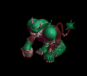 | 冠(630) | イヤリング(450) | 帰還(360) | 職業鎧(270) | 矢(180) | 翼(90) | 水晶(90) | 魔弾(180) | |
| 蛙3 Zin | 動物 | ボス2 | |||||||
 | 両手剣(630) | 爪(450) | 帰還(360) | 能力向上1(270) | 肩刺青(180) | イベント(90) | 鎌(630) | ||
| ラジエータカエル4 Zin | 動物 | ボス3 | |||||||
 | 鍵(840) | 爪(600) | 帰還(480) | 槍(360) | 槍投擲機(240) | 杖(120) | 本(120) | 箒(360) | |
| カメレオン2 Zin | 動物 | セミ3 | |||||||
 | 冠(250) | 鈍器(180) | 帰還(140) | 十字架(110) | cP回復(70) | 盾(40) | |||
| ラジエータカメ Zin | 動物 | 一般4 | |||||||
| 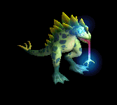 | 冠(70) | 状態異常回復2(50) | 帰還(40) | 鞭(30) | 弓(20) | 杖(10) | 本(10) | 銃(20) | |
| 装甲亀2 Zin | 動物 | セミ3 | |||||||
 | 能力向上2(250) | ブローチ(180) | 帰還(140) | 能力向上1(110) | 弓(70) | イベント(40) | 銃(70) | ||
| 赤パネルバッファ2 Zin | 神獣 | セミ3 | |||||||
 | 能力向上2(320) | 爪(460) | 帰還(250) | 鞭(40) | 腰(70) | イベント(180) | |||
| 赤パネルバッファ4 Zin | 神獣 | ボス3 | |||||||
 | 指輪(1080) | 爪(1560) | 帰還(840) | 鞭(120) | 状態異常回復1(240) | 兜・帽子(600) | |||
| エメラルドバッファ3 Zin | 神獣 | ボス2 | |||||||
 | 指輪(810) | 状態異常回復2(1170) | 帰還(630) | 鞭(90) | 腰(180) | 兜・帽子(450) | |||
| ペガサス Zin | 神獣 | 一般4 | |||||||
 | 冠(90) | マント(130) | 帰還(70) | 鞭(10) | 弓(20) | HP回復(50) | 銃(20) | ||
| ブルーウイング Zin | 神獣 | セミ1 | |||||||
| 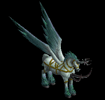 | 冠(160) | マント(230) | 帰還(120) | 能力向上1(20) | 弓(40) | 翼(90) | 水晶(90) | 銃(40) | |
| 審判官 Zin | 神獣 | 一般4 | |||||||
 | 能力向上2(90) | 鈍器(130) | 帰還(70) | 笛(10) | 矢(20) | HP回復(50) | 魔弾(20) | ||
| 堕天使 Zin | 神獣 | 一般3 | |||||||
 | 投擲(120) | ブローチ(170) | 帰還(90) | 能力向上1(10) | 状態異常回復1(30) | HP回復(70) | |||
| 番人 | 悪魔 | 一般3 | |||||||
| 笛(360) | 翼(240) | 状態異常回復1(360) | 兜・帽子(200) | 冠(180) | 帰還(140) | 水晶(240) | ||
| 監視者 | 悪魔 | 一般4 | |||||||
| 笛(300) | 翼(200) | 状態異常回復1(300) | 兜・帽子(170) | 首(150) | 帰還(120) | 水晶(200) | ||
| 見識者 | 悪魔 | セミ2 | |||||||
| 投擲(420) | 翼(280) | 状態異常回復1(420) | 兜・帽子(230) | 冠(210) | 帰還(170) | 水晶(280) | ||
| ガウス | 悪魔 | セミ3 | |||||||
| 笛(450) | 翼(300) | 鍵(450) | 兜・帽子(250) | 首(230) | 帰還(180) | 水晶(300) | ||
| イビルアイ | 悪魔 | ボス2 | |||||||
| 投擲(490) | 翼(330) | cP回復(490) | 兜・帽子(270) | 冠(250) | 帰還(200) | 水晶(330) | ||
| 見張り Ex | 悪魔 | 一般3 | |||||||
| 笛(360) | 翼(240) | 状態異常回復1(360) | 兜・帽子(200) | 冠(180) | 帰還(140) | 水晶(240) | ||
| 監視者 Ex | 悪魔 | 一般4 | |||||||
| 笛(300) | 翼(200) | 状態異常回復1(300) | 兜・帽子(170) | 首(150) | 帰還(120) | 水晶(200) | ||
| 見識者 Ex | 悪魔 | セミ2 | |||||||
| 投擲(650) | 翼(430) | 状態異常回復1(650) | 兜・帽子(360) | 冠(330) | 帰還(260) | 水晶(430) | ||
| ガウス Ex | 悪魔 | セミ3 | |||||||
| 笛(800) | 翼(530) | 鍵(50) | 兜・帽子(440) | 首(400) | 帰還(320) | 水晶(530) | ||
| エビルアイ Ex | 悪魔 | ボス2 | |||||||
| 投擲(2000) | 翼(1330) | cP回復(2000) | 兜・帽子(1110) | 冠(1000) | 帰還(800) | 水晶(1330) | ||
| 土蜘蛛 | 動物 | 一般2 | |||||||
| 片手剣(380) | 投擲(250) | 矢(380) | グローブ(210) | 首(190) | 帰還(150) | クロー(380) | 魔弾(380) | |
| 女郎蜘蛛 | 動物 | セミ1 | |||||||
| 片手剣(390) | 槍(260) | 矢(390) | グローブ(220) | 首(200) | 帰還(160) | クロー(390) | 箒(260) | 魔弾(390) |
| 土蜘蛛 Ex | 動物 | 一般2 | |||||||
| 片手剣(380) | 投擲(250) | 矢(380) | グローブ(210) | 首(190) | 帰還(150) | クロー(380) | 魔弾(380) | |
| 女郎蜘蛛 Ex | 動物 | セミ1 | |||||||
| 片手剣(450) | 槍(300) | 矢(450) | グローブ(250) | 首(230) | 帰還(180) | クロー(450) | 箒(300) | 魔弾(450) |
| ゼリーフィッシュ | 動物 | 一般1 | |||||||
| 鞭(410) | スリング(270) | 弾(410) | 腰(230) | 手首(210) | 帰還(160) | |||
| オーカーゼリー | 動物 | 一般3 | |||||||
| 鞭(360) | スリング(240) | 弾(360) | 腰(200) | 手首(180) | 帰還(140) | ||||
| ダイオウイカ | 動物 | ボス1 | |||||||
| 鞭(470) | スリング(310) | 弾(470) | 腰(260) | 手首(240) | 帰還(190) | |||
| ゼリーフィッシュ Ex | 動物 | 一般1 | |||||||
| 鞭(410) | スリング(270) | 弾(410) | 腰(230) | 手首(210) | 帰還(160) | |||
| オーカーゼリー Ex | 動物 | 一般3 | |||||||
| 鞭(360) | スリング(240) | 弾(360) | 腰(200) | 手首(180) | 帰還(140) | ||||
| ダイオウイカ Ex | 動物 | ボス1 | |||||||
| 鞭(1200) | スリング(800) | 弾(1200) | 腰(670) | 手首(600) | 帰還(480) | |||
| 昆虫の大群 | 動物 | 一般2 | |||||||
| 笛(380) | 翼(250) | イベント(380) | 腰(210) | 首(190) | 帰還(150) | 水晶(250) | ||
| 蚊の大群 | 動物 | 一般3 | |||||||
| 笛(360) | 翼(240) | イベント(360) | 足(200) | イヤリング(180) | 帰還(140) | 水晶(240) | ||
| イナゴの大群 | 動物 | セミ1 | |||||||
| 笛(390) | 翼(260) | イベント(390) | 兜・帽子(220) | 首(200) | 帰還(160) | 水晶(260) | ||
| 殺人昆虫の大群 | 動物 | ボス1 | |||||||
| 笛(470) | 翼(310) | イベント(470) | マント(260) | イヤリング(240) | 帰還(190) | 水晶(310) | ||
| 昆虫の大群 Ex | 動物 | 一般2 | |||||||
| 笛(380) | 翼(250) | イベント(380) | 腰(210) | 首(190) | 帰還(150) | 水晶(250) | ||
| 蚊の大群 Ex | 動物 | 一般3 | |||||||
| 笛(360) | 翼(240) | イベント(360) | 足(200) | イヤリング(180) | 帰還(140) | 水晶(240) | ||
| イナゴの大群 Ex | 動物 | セミ1 | |||||||
| 笛(450) | 翼(300) | イベント(450) | 兜・帽子(250) | 首(230) | 帰還(180) | 水晶(300) | ||
| 殺人昆虫の大群 Ex | 動物 | ボス1 | |||||||
| 笛(1200) | 翼(800) | イベント(1200) | マント(670) | イヤリング(600) | 帰還(480) | 水晶(800) | ||
| 骸骨魔法師 Zin | アンデット | 一般4 | |||||||
| 宝石(40) | マント(70) | 帰還(120) | マント(170) | 矢(220) | HP回復(260) | 魔弾(220) | ||
| ジャックランタン Zin | 悪魔 | 一般4 | |||||||
| 指輪(130) | 状態異常回復2(160) | 帰還(70) | 能力向上1(40) | 腰(20) | グローブ(10) | |||
| アーカン Zin | 神獣 | 一般4 | |||||||
| 能力向上2(90) | 鈍器(130) | 帰還(70) | 笛(10) | 矢(20) | HP回復(50) | 魔弾(20) | ||
| 森の守り人 Zin | 悪魔 | セミ2 | |||||||
| 投擲(750) | 翼(500) | 状態異常回復1(750) | 兜・帽子(420) | 冠(380) | 帰還(300) | 水晶(500) | ||
| ガウス Zin | 悪魔 | セミ3 | |||||||
| 笛(900) | 翼(600) | 鍵(40) | 兜・帽子(500) | 首(450) | 帰還(360) | 水晶(600) | ||
| 骸骨魔法師 Zin | アンデット | 一般4 | |||||||
| 宝石(40) | マント(70) | 帰還(120) | マント(170) | 矢(220) | HP回復(260) | 魔弾(220) | ||
| ジャックランタン Zin | 悪魔 | 一般4 | |||||||
| 指輪(130) | 状態異常回復2(160) | 帰還(70) | 能力向上1(40) | 腰(20) | グローブ(10) | |||
| マゴットEv | 動物 | 一般3 | |||||||
| 鈍器(1560) | スリング(1040) | イベント(1560) | マント(870) | 冠(780) | 帰還(620) | |||
| ゾンビEv | アンデット | 一般3 | |||||||
| 投擲(1560) | 牙(1040) | イベント(1560) | 兜・帽子(870) | 爪(780) | 帰還(620) | 双剣(1040) | ||
| 巨人骸骨Ev | 人間 | 一般3 | |||||||
| 鈍器(1560) | 牙(1040) | 弾(1560) | 足(870) | 冠(780) | 帰還(620) | 双剣(1040) | ||
| 骸骨狂戦士Ev | アンデット | 一般3 | |||||||
| 両手剣(1560) | 鈍器(1040) | 矢(1560) | 足(870) | 槍投擲機(780) | 帰還(620) | 鎌(1560) | 魔弾(1560) | ||
| 骸骨剣士Ev | アンデット | 一般3 | |||||||
| 片手剣(1560) | 弓(1040) | 矢(1560) | 兜・帽子(870) | 槍投擲機(780) | 帰還(620) | クロー(1560) | 銃(1040) | 魔弾(1560) |
| アイウィングEv | 悪魔 | 一般3 | |||||||
| 笛(1560) | 翼(1040) | 状態異常回復1(1560) | 兜・帽子(870) | 冠(780) | 帰還(620) | 水晶(1040) | ||
| ラティアンEv | 悪魔 | 一般3 | |||||||
| 投擲(1560) | 笛(1040) | 弾(1560) | 足(870) | 手首(780) | 帰還(620) | |||
| 殺人蚊の群れEv | 動物 | 一般3 | |||||||
| 笛(1560) | 翼(1040) | イベント(1560) | 足(870) | イヤリング(780) | 帰還(620) | 水晶(1040) | ||
| アクアスライムEv | 動物 | 一般3 | |||||||
| 鞭(1560) | スリング(1040) | 弾(1560) | 腰(870) | 手首(780) | 帰還(620) | ||||
| ドゥームスフィアEv | 悪魔 | 一般4 | |||||||
| 笛(1200) | 翼(800) | 状態異常回復1(1200) | 兜・帽子(670) | 首(600) | 帰還(480) | 水晶(800) | ||
| クローラーEv | 動物 | 一般4 | |||||||
| 鈍器(1200) | 片手剣(800) | イベント(1200) | マント(670) | 冠(600) | 帰還(480) | クロー(800) | |||
| キクロップスEv | 人間 | セミ1 | |||||||
| スリング(650) | 杖(430) | 弾(650) | 足(360) | 爪(330) | 帰還(260) | 本(430) | ||
| エルフガーディアEv | 人間 | セミ3 | |||||||
| 片手剣(180) | ブローチ(530) | 帰還(350) | 槍(280) | 状態異常回復1(70) | 兜・帽子(110) | クロー(180) | 箒(280) | |
| 斧骸骨戦士Sp | アンデット | 一般4 | |||||||
| 両手剣(1200) | 鈍器(800) | 矢(1200) | 足(700) | 槍投擲機(600) | 帰還(500) | 鎌(1200) | 魔弾(1200) | |
| 両刀骸骨戦士Sp | アンデット | 一般4 | |||||||
| 片手剣(1200) | 弓(800) | 矢(1200) | 兜・帽子(700) | 槍投擲機(600) | 帰還(500) | クロー(1200) | 銃(800) | 魔弾(1200) |
| アンデッドライトSp | アンデット | セミ1 | |||||||
 | 鍵(50) | 状態異常回復2(100) | 帰還(150) | cP回復(200) | 矢(300) | イベント(400) | 魔弾(300) | ||
| 鬼イナゴSp | 悪魔 | 一般4 | |||||||
| 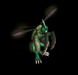 | 投擲(1100) | 鈍器(800) | 帰還(300) | cP回復(400) | 腰(700) | HP回復(400) | |||
| ジャックランタン4 Sp | 悪魔 | 一般4 | |||||||
 | 指輪(1300) | 状態異常回復2(1500) | 帰還(700) | 能力向上1(400) | 腰(200) | グローブ(100) | |||
| 赤パネルバッファ4 Sp | 神獣 | 一般4 | |||||||
| 指輪(1100) | 爪(1500) | 帰還(800) | 鞭(200) | 状態異常回復1(300) | 兜・帽子(600) | |||
| 堕天使Sp | 神獣 | セミ1 | |||||||
 | 投擲(600) | ブローチ(800) | 帰還(300) | 能力向上1(300) | 状態異常回復1(300) | HP回復(300) | |||
| アクアスライムSp | 動物 | 一般4 | |||||||
| 鞭(1500) | スリング(1000) | 弾(1600) | 腰(900) | 手首(800) | 帰還(600) | ||||
| クラーケンSp | 動物 | 一般4 | |||||||
| 鞭(1000) | スリング(670) | 弾(1000) | 腰(560) | 手首(500) | 帰還(400) | |||
| ブルーウイングSp | 神獣 | セミ1 | |||||||
| 冠(1000) | マント(600) | 帰還(400) | 能力向上1(500) | 弓(600) | 翼(800) | 水晶(800) | 銃(600) | ||
| アンデッド魔法師Sp | アンデット | 一般4 | |||||||
| 宝石(300) | マント(900) | 帰還(400) | 矢(1100) | HP回復(400) | 魔弾(1100) | |||
| パンプキンヘッドSp | 悪魔 | 一般4 | |||||||
| 指輪(1300) | 状態異常回復2(1500) | 帰還(700) | 能力向上1(400) | 腰(200) | グローブ(100) | |||
| 覚醒ボーンキメラZin | アンデット | セミ1 | |||||||
 | 能力向上2(50) | 状態異常回復2(90) | 帰還(160) | 能力向上2(230) | 槍投擲機(300) | イベント(350) | |||
| 覚醒パンプキンZin | 悪魔 | セミ1 | |||||||
 | 指輪(130) | 状態異常回復2(160) | 帰還(70) | 能力向上1(40) | 腰(20) | グローブ(10) | |||
| アデッドロック Sp | アンデット | 一般4 | |||||||
| 宝石(300) | マント(900) | 帰還(400) | 矢(1100) | HP回復(400) | 魔弾(1100) |